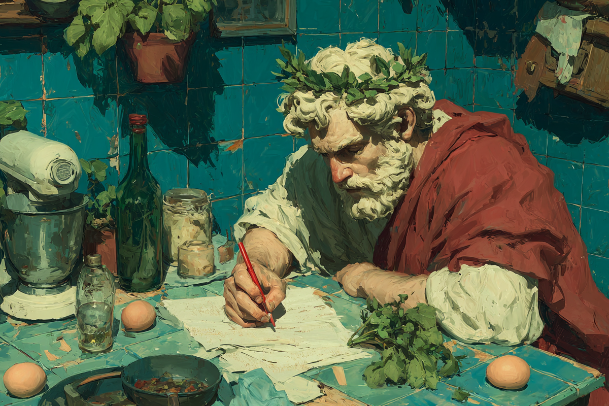
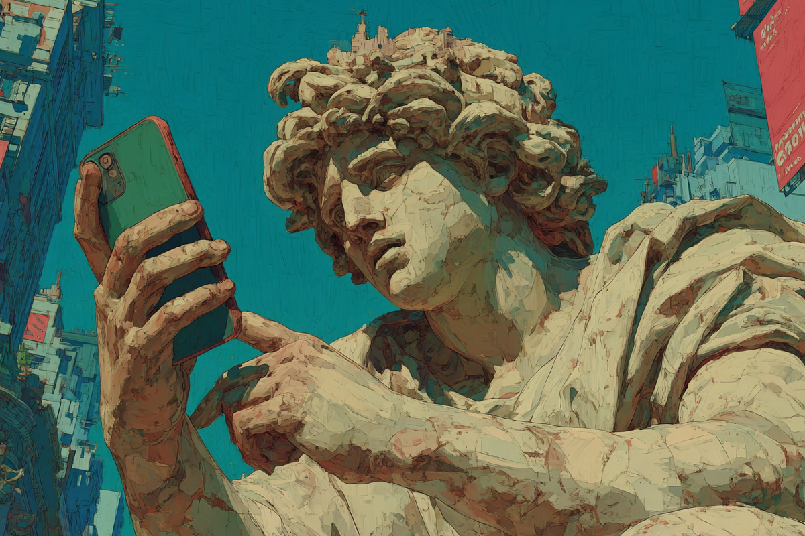
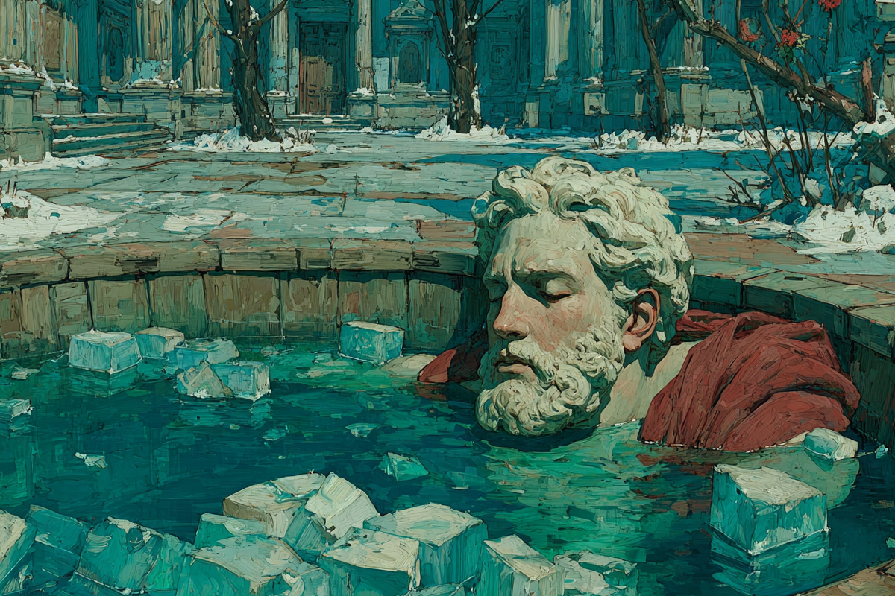

Estoicismo reloaded
¿Qué es y por qué se está hablando de esto?
¿Qué es y por qué se está hablando de esto?

Si nos adentramos en el mundo de las creencias en TikTok, aparecen todo tipo de corrientes. Gente que cree que todo lo que pasa en la vida está predestinado, gente que cree en la astrología y últimamente, también gente que cree que debemos aceptar lo que pasa y liberarnos de lo que no podemos controlar. Los estoicos, como se hacen llamar.
Esta antigua filosofía griega data de principios del siglo III a.C y se basa en el dominio y control de los hechos, controlando las emociones y haciendo uso de la valentía y la razón para progresar como persona.

El estoicismo surgió en Atenas impulsado por el filósofo Zenón de Citio. Muy propio de esa época, emergió desde las tragedias y desastres que ocurrían, como una forma de pensar para tratar de evitar el sufrimiento innecesario.
¿Cuáles son sus conceptos clave? La virtud, la razón, el control de las emociones y la aceptación, entre otros. Los estoicos creen que la felicidad se alcanza a través de la práctica de la virtud, que incluye la sabiduría y el coraje. También consideran que las emociones destructivas son el resultado de nuestra forma de ver el mundo, y pensar racionalmente puede ayudar a corregir eso para no sufrir de más.
Algo muy sabio que promueve el estoicismo es aceptar lo que no podemos controlar. Para ellos, la muerte, la salud, la riqueza o la reputación entran en esta categoría. Por eso, promueven soltarlo y enfocarse en lo que sí se puede controlar en la vida.

Si bien el tema se puso entre nosotros principalmente por el libro “Diario para Estoicos”, que se publicó en 2020 con gran éxito, ha sido TikTok el que ha puesto el estoicismo como tema de conversación. Quizás en tiempos de caos, cambios políticos y medioambientales, es natural que resurjan formas de intentar comprender el mundo y llevar la vida de forma más simple.
El estoicismo ha ganado fama entre empresarios exitosos, entrenadores personales o emprendedores como la mejor forma para tener una vida plena y en paz. De hecho, no es raro encontrar posts en LinkedIn inspirados en ello.

Llevándolo a lo práctico, hay dos prácticas del estoicismo que se han vuelto bastante populares. La primera es escribir un diario filosófico, para reflexionar sobre las cosas importantes que pasan cada día y entender si esas prácticas se alinean con tu ética o no. Lo segundo es algo que probablemente has visto, los ejercicios de autoconservación: exponerse a baños de agua fría o practicar ayuno intermitente.
Quizás lo más llamativo de este “estoicismo reloaded” no es su viralidad en redes sociales, sino lo que revela sobre nosotros mismos: que en un mundo hiperconectado, incierto y veloz, seguimos buscando respuestas en lo esencial. Tal vez por eso, aunque tengamos apps de meditación o algunas personas hagan terapia con ChatGPT, volvemos una y otra vez a ideas que nacieron hace más de dos mil años. Y es que, al final del día, lo que queremos sigue siendo lo mismo: vivir mejor, con más paz, más propósito y menos ruido.
 Cultura
CulturaSé que suena raro hablar de calor extremo mientras en Chile todos están buscando la parka más gruesa del clóset.
 Cultura
CulturaEl hecho de que estemos entrando al mes de julio no se puede creer. Pero lo que tampoco se puede creer es la cantidad de artistas que han…
 Cultura
CulturaCuando hablamos de trabajos clásicos de la música chilena, siempre se nombran los discos de Violeta Parra, Víctor Jara, Los Jaivas o…